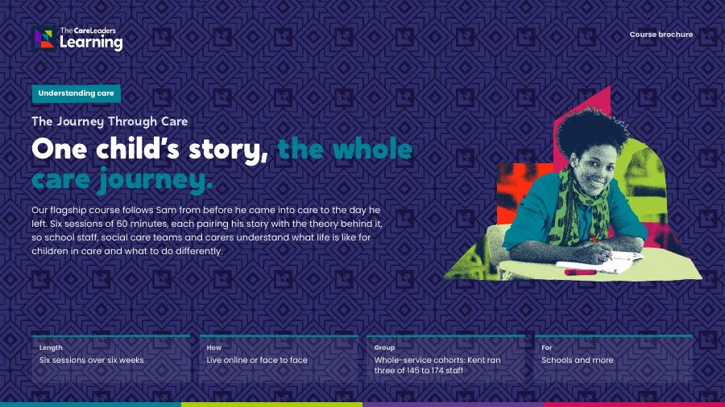

One child’s story, the whole care journey.
A six-week programme for school staff, social care teams and carers. Over six 60-minute sessions you follow one child, Sam, from before he was born to leaving care at 18, and learn the theory that explains each part of his life. Your staff come away reading behaviour, writing records and planning with each other from the child’s side.
- Length
- Six 60-minute sessions over six weeks
- How
- Live online or face to face
- Group
- Whole-service cohorts: Kent ran three of 145 to 174 staff
- For
- School and social care staff, and carers

Staff see the behaviour, the missed meeting and the file, but not the life behind them. That gap shows up in escalations, in records that label children, and in schools and social care misreading each other while the child falls between them. This programme closes it one session at a time. Each week picks up Sam’s life at a new age, gives you the theory that explains what he did, and ends with something you use with a real child the following week.
What changes
- Ask what happened, and what is happening for the child, before reacting to the behaviour
- Spot when a child is outside their window of tolerance and help them settle before expecting them to talk or learn
- Write about children in records, reports and meetings knowing the child may read it one day
- Plan extra support around the hard points in care: coming in, moving and leaving
- Understand what the other side does, so school and social care plan together for the same child
- Adults who ask what happened before reacting to what they did
- Meetings and records that describe them fairly, without labels
- School and social care staff who understand each other’s world
- More understanding at the hard points: entering care, moving and leaving
Story
- Describe what entering care and a first week in a new home feel like from a child’s side, using Sam’s story.
- Describe what leaving care at 18 involves for a young person, including Staying Put to 21 and support from a personal adviser up to 25.
Theory
- Explain how adverse childhood experiences (Felitti and colleagues, 1998), attachment (Bowlby, 1969) and ambiguous loss (Boss, 1999) shape the way a child in care relates to adults.
- Explain Dan Siegel’s window of tolerance (1999) and use it to read a child’s behaviour as communication.
Action
- Use Spot, Soothe, Shift and emotion coaching to respond to a child in a hard moment.
- Rewrite a record about a child using Language that Cares, and plan one joint action between school and social care for a child they work with.
- Teachers, teaching assistants, designated teachers and pastoral staff
- Social workers, personal advisers and early help staff
- Foster carers, kinship carers and residential staff
- New starters in children’s services
- No prior knowledge is needed. Each person brings one real child, anonymised, to think about across the six sessions. Groups range from one team to whole-service cohorts
Session by session
 Story
Story Theory
Theory Action
Action
Sam’s story is the thread. Each session opens with a moment from his life, gives you the theory that explains it and ends with a tool people practise in the session and use the next week. Sam is a composite. His story draws on real experiences of care but is not one person. Open a part to see what happens.
1Before care
Story. Sam’s mum stops going to her midwife appointments halfway through the pregnancy. By the time Sam is 3 he has learnt to go quiet and hide his toys when his dad comes home. Nobody outside the house knows yet.
Theory. The adverse childhood experiences study (Felitti and colleagues, 1998) found that abuse, neglect and household difficulties in childhood are linked to poorer health and wellbeing in adult life. Diana Baumrind’s parenting styles (1966) show how warmth and control at home shape what a young child expects from adults. We are honest about the limits too: ACEs describe patterns across a population, not a score for one child.
Action. A life-before-care timeline. Staff map Sam’s first five years: what was happening around him, what he learnt to do to stay safe, and which adults could have noticed. Then they start the same timeline for the child they brought, adding anything that protected them.
By the end of this part people can describe how early adversity and parenting affect a young child’s development, and say why an ACE count should never be used to label one child.
 You leave with A handout on ACEs and parenting styles, a life-before-care timeline and a reflection task for the week
You leave with A handout on ACEs and parenting styles, a life-before-care timeline and a reflection task for the week
2Entering care
Story. Sam is 7. A social worker and a police officer collect him from school at 2pm. His things follow in a bin bag. That night his new foster carer asks what he likes for breakfast, and he asks when he is going home.
Theory. The legal routes into care under the Children Act 1989: accommodation by agreement under section 20, a care order through the court under section 31, and emergency routes through police protection or an emergency protection order. Then the types of care, foster, kinship and residential, and what each looks like from the child’s side.
Action. A first-week plan. In small groups staff plan Sam’s first week from his side: who explains what is happening and in what words, what he brings with him, which adult at school checks in each day, and when he next sees his family.
By the end of this part people can explain the main routes into care in plain words, and plan a child’s first week in a new home or school around what the child needs to know.
 You leave with A handout on routes into care and the types of care, and a first-week plan template
You leave with A handout on routes into care and the types of care, and a first-week plan template
3Attachment, trauma and loss
Story. Sam is 10 and in his third foster home. The week before his birthday he is rude to his carer, refuses the meal she cooks and breaks the present she bought him. She wonders if he wants to leave.
Theory. John Bowlby’s attachment theory (1969) and Mary Ainsworth’s attachment patterns (1978) explain why a child who has lost the adults closest to him expects to lose the next ones, and may push them away first. Pauline Boss’s idea of ambiguous loss (1999) explains grieving for a parent who is alive but not there, which is why birthdays, Christmas and family time can be the hardest days.
Action. PACE. Using Dan Hughes’s playfulness, acceptance, curiosity and empathy, staff take the things adults usually say to Sam in that moment and rewrite them as PACE responses, then practise them in pairs with their own child in mind.
By the end of this part people can recognise how attachment, trauma and loss show up in a child’s relationships with adults, and use PACE to stay alongside a child who is pushing them away.
 You leave with A handout on attachment patterns and relationship-focused practice, and a card of PACE phrases
You leave with A handout on attachment patterns and relationship-focused practice, and a card of PACE phrases
4Behaviour as communication
Story. Sam is 13. A supply teacher moves his seat in front of the class. He throws a chair and walks out. Earlier that morning he found out his contact with his brother has been cancelled.
Theory. Behaviour is communication. Dan Siegel’s window of tolerance (1999) explains why a child who has had to live on high alert can tip into fight, flight or shutdown at things other people barely notice, and why nobody can reason with him once he has. John Gottman’s emotion coaching (1997) gives adults a way to name and accept the feeling while still holding the limit.
Action. Spot, Soothe, Shift, with emotion coaching. Staff replay Sam’s moment in the classroom in threes and work out what the adult notices, what they say first so Sam feels safe, and how they talk it through with him once he is back in his window. They then practise the same steps on a moment from their own week.
By the end of this part people can explain the window of tolerance to a colleague in plain words, and use Spot, Soothe, Shift to respond to a child in the moment without escalating it.
 You leave with Spot, Soothe, Shift: a way to read the message in behaviour and respond in the moment
You leave with Spot, Soothe, Shift: a way to read the message in behaviour and respond in the moment
5Language and recording
Story. Sam is 17 and asks to see his file. He reads that he “absconded” on the night he went to find his mum, and that he has “contact” with his brother. He has never used either word in his life.
Theory. Someone is going to read this. TACT’s Language that Cares (2019), written with care-experienced young people, sets out the words that make children feel like a case and better ones to use instead. We cover care-experienced adults’ right to ask for their records, and why that means every record should be written with the child as a future reader.
Action. Language that Cares. Staff take a sample record about Sam, mark every word that labels or blames him, and rewrite it so it is accurate, fair and still says what happened. Then they check one thing they have written about their own child.
By the end of this part people can spot labelling language in a record or meeting and rewrite a record so it is accurate, fair and written with the child as a future reader.
 You leave with A check for your own language and records, written with the child in mind
You leave with A check for your own language and records, written with the child in mind
6School, social care and leaving care
Story. Sam is 18. He is sitting his exams in the same month he moves into his own flat. His personal education plan meeting and his pathway plan meeting are held a week apart, and nobody in either room knows about the other one.
Theory. The roles of the virtual school head (a duty under the Children and Families Act 2014) and the designated teacher, and how the personal education plan sits inside a child’s care plan. Then leaving care: the pathway plan, Staying Put to 21 under the Children and Families Act 2014, and a personal adviser up to 25 under the Children and Social Work Act 2017. We look at where school and social care clash, and why.
Action. A joint plan for one child. Mixed groups of school and social care staff take Sam’s last year and agree who does what, who tells Sam and how both meetings connect. Then each person writes one joint action for the child they have brought through the programme.
By the end of this part people can describe what leaving care at 18 involves, and plan one joint action between school and social care for a child they work with.
 You leave with A plan for working across school and social care for one child
You leave with A plan for working across school and social care for one child
Choose how you run it
Six live sessions with a facilitator, usually one a week after school, so staff across a whole county can join without travelling.
- Length
- Six sessions of 60 minutes, one a week over six weeks
- Group
- From one team to whole-service cohorts; Kent ran three cohorts of 145 to 174 staff
- You provide
- Teams or Zoom, cameras on, a quiet space
We come to you for six twilight sessions in your building or a venue you choose, or run all six across one development day.
- Length
- Six twilight sessions, or one development day
- Group
- A whole staff team, or a group of schools and social care teams together
- You provide
- A room, a screen and the time protected
Included: Session handouts, a reflection task between sessions, and the slides to keep
Six twilight sessions for three Virtual School Kent cohorts, around 490 staff. 124 of 125 said the first session met its objectives.
Read the case studyDownload The Journey Through Care brochure
The six sessions, what changes for staff and children, the formats and how to book, in one PDF to share with colleagues.
Thank you. Your brochure is downloading.
If it didn’t start, open the brochure here.

Questions commissioners ask
How is the programme structured?
Six sessions of 60 minutes, usually one a week over six weeks. Every session follows Sam at a different age, from before he was born to leaving care at 18. Story: a moment from his life, such as his first night in care or reading his own file at 17. Theory: the idea that explains it, from adverse childhood experiences and attachment to the window of tolerance. Action: a tool staff practise in the session, such as PACE or Spot, Soothe, Shift. Between sessions there is a short reflection task, and each person thinks about one real child, anonymised, all the way through.
Can school staff and social care staff join the same cohort?
Yes. It was built for both, and session 6 is about where school and social care meet. Kent’s cohorts brought teachers, school staff, college staff and social care staff together.
How many people can join?
Whole-service cohorts work. Kent ran three cohorts of 145 to 174 staff. We can also record the series for your organisation and license it for a year, on your platform or ours, with no limit on numbers.
Do people get a certificate?
Yes. Everyone who completes the programme receives a certificate of completion from us.
Who delivers it?
Facilitators with lived experience of care and professional experience of the schools and social work teams around it. Sam’s story is told from lived experience.
How do you price it?
We quote per cohort, based on how many people, the format and how much tailoring you want. Tell us what you need and we will send you a clear quote.
Often booked with
 Understanding careBehind the BehaviourReading behaviour as communication, and responding without losing the relationship.6 hours face to face, 2 hours online
Understanding careBehind the BehaviourReading behaviour as communication, and responding without losing the relationship.6 hours face to face, 2 hours online SchoolsTwo Timetables: When School Meets Social CareTeachers and social workers learning each other’s worlds, so children stop falling between them.6 hours face to face, 2 hours online
SchoolsTwo Timetables: When School Meets Social CareTeachers and social workers learning each other’s worlds, so children stop falling between them.6 hours face to face, 2 hours onlineTalk to us about The Journey Through Care
Tell us who it is for and roughly how many people. We will shape it around your service and send you a quote.